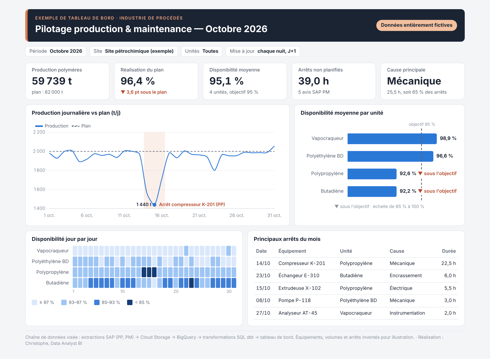
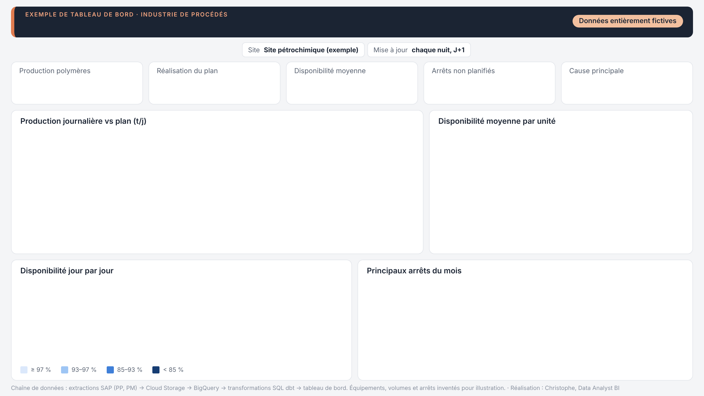
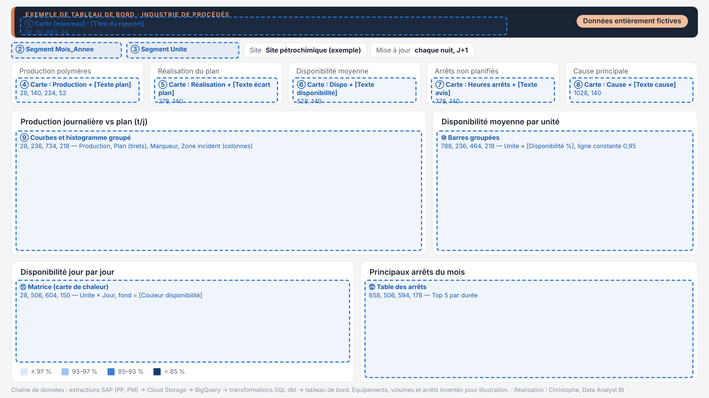

Dossier de réalisation · Power BI
Fichiers du dépôt (github.com/CAK91DY/dashboard-production) :
powerbi/donnees/donnees_pilotage_production.xlsx (données), powerbi/mesures.dax (mesures à coller),
powerbi/theme_pilotage.json (thème), powerbi/fond_de_page_1280x720.png (image de fond).



| De (côté plusieurs) | Vers (côté un) | |
|---|---|---|
Fait_Production_Horaire[Date] | → | Dim_Date[Date] |
Fait_Production_Horaire[Code_Unite] | → | Dim_Unite[Code_Unite] |
Fait_Plan[Date] | → | Dim_Date[Date] |
Fait_Plan[Code_Unite] | → | Dim_Unite[Code_Unite] |
Fait_Arrets[Date] | → | Dim_Date[Date] |
Fait_Arrets[Code_Unite] | → | Dim_Unite[Code_Unite] |
Fait_Arrets[Code_Equipement] | → | Dim_Equipement[Code_Equipement] |
Fait_Arrets[Cause] | → | Dim_Cause[Cause] |
Dim_Equipement et Dim_Unite : elle rendrait le modèle ambigu.
En octobre 2026, les agrégats retombent exactement sur les CSV envoyés au client (contrôlé par scripts/verifier.py).Production et temps de marche / d'arrêt de chaque ligne, heure par heure.
| Colonne | Type Power BI | Contenu | Exemple |
|---|---|---|---|
Date_Heure | Date/heure | Début de l'heure | 2024-11-01 00:00:00 |
Date | Date | Jour (clé vers Dim_Date) | 2024-11-01 |
Heure | Nombre entier | 0 à 23 | 0 |
Poste | Texte | Matin (6-14 h), Après-midi (14-22 h), Nuit | Nuit |
Code_Unite | Texte | Clé vers Dim_Unite : VAPO, PEBD, PP, BUTA | VAPO |
Code_Ligne | Texte | VAPO-L1, PEBD-L1/L2, PP-L1/L2, BUTA-L1 | VAPO-L1 |
Production_t | Décimal | Tonnes produites dans l'heure | 101.316 |
Minutes_Calendrier | Décimal | Toujours 60 | 60.0 |
Minutes_Marche | Décimal | Minutes où la ligne a tourné | 60.0 |
Minutes_Arret_Non_Planifie | Décimal | Arrêt lié à un avis SAP PM « Arrêt ligne » | 0.0 |
Minutes_Arret_Planifie | Décimal | Grand arrêt programmé (inclus dans le plan) | 0.0 |
Minutes_Micro_Arret | Décimal | Arrêts courts (< 1 h) sans avis | 0.0 |
Plan de production journalier (déjà réduit les jours de grand arrêt planifié).
| Colonne | Type Power BI | Contenu | Exemple |
|---|---|---|---|
Date | Date | Jour (clé vers Dim_Date) | 2024-11-01 |
Code_Unite | Texte | Clé vers Dim_Unite : VAPO, PEBD, PP, BUTA | BUTA |
Plan_t | Décimal | Tonnes prévues dans la journée | 280.0 |
Arrêts non planifiés : équipement, cause, impact sur la ligne, durée.
| Colonne | Type Power BI | Contenu | Exemple |
|---|---|---|---|
Num_Avis | Texte | Numéro d'avis SAP PM (jamais additionné) | 30045000 |
Date | Date | Jour (clé vers Dim_Date) | 2024-11-02 |
Date_Heure_Debut | Date/heure | Début de l'arrêt | 2024-11-02 12:30:00 |
Date_Heure_Fin | Date/heure | Fin de l'arrêt | 2024-11-02 14:30:00 |
Code_Unite | Texte | Clé vers Dim_Unite : VAPO, PEBD, PP, BUTA | PP |
Code_Ligne | Texte | VAPO-L1, PEBD-L1/L2, PP-L1/L2, BUTA-L1 | PP-L2 |
Code_Equipement | Texte | Clé vers Dim_Equipement | X-102 |
Equipement | Texte | Libellé, ex. « Compresseur K-201 » | Extrudeuse X-102 |
Cause | Texte | Clé vers Dim_Cause | Instrumentation |
Impact_Ligne | Texte | Arrêt ligne / Débit réduit / Sans impact | Arrêt ligne |
Duree_h | Décimal | Durée d'indisponibilité de l'équipement (h) | 2.0 |
Statut | Texte | Statut de l'avis | Clôturé |
Calendrier : à marquer comme table de dates.
| Colonne | Type Power BI | Contenu | Exemple |
|---|---|---|---|
Date | Date | Jour (clé vers Dim_Date) | 2024-01-01 |
Annee | Nombre entier | 2024 | |
Trimestre | Texte | T1 à T4 | T1 |
Mois_Num | Nombre entier | 1 à 12 | 1 |
Mois | Texte | janvier… | janvier |
Mois_Annee | Texte | « oct. 2026 », trier par Cle_Mois | janv. 2024 |
Cle_Mois | Nombre entier | 202610 | 202401 |
Jour | Nombre entier | 1 à 31 (colonnes de la carte de chaleur) | 1 |
Jour_Semaine | Texte | lundi…, trier par Num_Jour_Semaine | lundi |
Num_Jour_Semaine | Nombre entier | 1 = lundi | 1 |
Semaine_ISO | Nombre entier | 1 | |
Avec_Donnees | Vrai/faux | Jour couvert par les faits | False |
Unités du site, famille (Polymère / Intermédiaire), objectif de disponibilité.
| Colonne | Type Power BI | Contenu | Exemple |
|---|---|---|---|
Code_Unite | Texte | Clé vers Dim_Unite : VAPO, PEBD, PP, BUTA | VAPO |
Unite | Texte | Libellé affiché, trier par Ordre | Vapocraqueur |
Famille | Texte | Polymère / Intermédiaire | Intermédiaire |
Nb_Lignes | Nombre entier | Lignes de production de l'unité | 1 |
Ordre | Nombre entier | Ordre d'affichage | 1 |
Objectif_Dispo | Décimal | 0,95 | 0.95 |
Repère, libellé, type et ligne de chaque équipement.
| Colonne | Type Power BI | Contenu | Exemple |
|---|---|---|---|
Code_Equipement | Texte | Clé vers Dim_Equipement | F-101 |
Equipement | Texte | Libellé, ex. « Compresseur K-201 » | Four de craquage F-101 |
Type_Equipement | Texte | Compresseur, Pompe, Four… | Four |
Code_Ligne | Texte | VAPO-L1, PEBD-L1/L2, PP-L1/L2, BUTA-L1 | VAPO-L1 |
Code_Unite | Texte | Clé vers Dim_Unite : VAPO, PEBD, PP, BUTA | VAPO |
Causes d'arrêt et leur famille (Technique / Procédé).
| Colonne | Type Power BI | Contenu | Exemple |
|---|---|---|---|
Cause | Texte | Clé vers Dim_Cause | Mécanique |
Famille_Cause | Texte | Technique / Procédé | Technique |
Ordre | Nombre entier | Ordre d'affichage | 1 |
| Code | Usage | |
|---|---|---|
#F4F5F7 | Fond de page | |
#FFFFFF | Cartes (fond) | |
#E3E6EB | Bordures | |
#1B2433 | Bandeau | |
#E07B4F | Liseré du bandeau, zone d'incident (85 % transp.) | |
#F3C09F | Badge « Données fictives » | |
#1B2433 | Texte principal | |
#5B6473 | Texte secondaire, plan, objectif | |
#8A92A0 | Texte discret | |
#2A78D6 | Série principale : production, barres | |
#B5482A | Alerte : « ▼ sous le plan », annotation | |
#2E7D32 | Au-dessus du plan | |
#DBE8FB | Carte de chaleur ≥ 97 % | |
#9EC5F4 | Carte de chaleur 93–97 % | |
#3F7FD8 | Carte de chaleur 85–93 % | |
#163D73 | Carte de chaleur < 85 % |
Le thème theme_pilotage.json applique ces couleurs et rend les visuels transparents et sans titre,
car les cadres et les titres sont dans l'image de fond.
_Mesures = ROW("x", 0), coller tout le fichier
powerbi/mesures.dax dans la vue Requête DAX, puis Mettre à jour le modèle avec les modifications et F5.
Le code ci-dessous est le même, pour lecture et explication.| Mesures | Format |
|---|---|
| Production…, Plan…, Écart au plan (t), Jour le plus bas (t), Zone incident, Marqueur | Nombre entier, séparateur de milliers |
| Toutes les mesures dont le nom finit par % | Pourcentage, 1 décimale |
| Écart … (pt), Heures …, MTTR (h), MTBF (h) | Décimal, 1 décimale |
| Date du jour le plus bas | Date, format dd/MM/yyyy |
| Textes, Couleurs, Libellés, Période, Titre | Texte (aucun réglage) |
MEASURE _Mesures[Production (t)] =
SUM ( Fait_Production_Horaire[Production_t] )
// Production des seules unités de polymères (PEBD + PP) ; KEEPFILTERS respecte le segment « Unités »
MEASURE _Mesures[Production polymères (t)] =
CALCULATE ( [Production (t)], KEEPFILTERS ( Dim_Unite[Famille] = "Polymère" ) )
MEASURE _Mesures[Plan (t)] =
SUM ( Fait_Plan[Plan_t] )
MEASURE _Mesures[Plan polymères (t)] =
CALCULATE ( [Plan (t)], KEEPFILTERS ( Dim_Unite[Famille] = "Polymère" ) )
MEASURE _Mesures[Écart au plan (t)] =
[Production polymères (t)] - [Plan polymères (t)]
MEASURE _Mesures[Réalisation du plan %] =
DIVIDE ( [Production polymères (t)], [Plan polymères (t)] )
// Écart en points, calculé AVANT arrondi : 96,35 % -> -3,65 pt -> affiché « -3,6 pt »
MEASURE _Mesures[Écart réalisation (pt)] =
( [Réalisation du plan %] - 1 ) * 100
// Jour le plus bas de la période (les jours sans données sont exclus)
MEASURE _Mesures[Jour le plus bas (t)] =
MINX (
FILTER ( VALUES ( Dim_Date[Date] ), NOT ISBLANK ( [Production polymères (t)] ) ),
[Production polymères (t)]
)
MEASURE _Mesures[Date du jour le plus bas] =
VAR Jours =
ADDCOLUMNS (
FILTER ( VALUES ( Dim_Date[Date] ), NOT ISBLANK ( [Production polymères (t)] ) ),
"@Prod", [Production polymères (t)]
)
VAR Mini = MINX ( Jours, [@Prod] )
RETURN MAXX ( FILTER ( Jours, [@Prod] = Mini ), Dim_Date[Date] )
// Série « marqueur » de la courbe : valeur uniquement le jour le plus bas (point + étiquette)
MEASURE _Mesures[Marqueur jour le plus bas] =
VAR Mini = CALCULATE ( [Jour le plus bas (t)], ALLSELECTED ( Dim_Date ) )
VAR Prod = [Production polymères (t)]
RETURN IF ( NOT ISBLANK ( Prod ) && Prod = Mini, Prod )
// Zone colorée de la courbe : jours où la production est sous 90 % du plan.
// Renvoie le haut de l'axe (110 % du plan max) pour tracer une colonne pleine hauteur.
MEASURE _Mesures[Zone incident] =
VAR Seuil = 0.90
VAR HautAxe = CALCULATE ( MAXX ( VALUES ( Dim_Date[Date] ), [Plan polymères (t)] ), ALLSELECTED ( Dim_Date ) ) * 1.1
RETURN IF ( [Production polymères (t)] < Seuil * [Plan polymères (t)], HautAxe )
MEASURE _Mesures[Minutes calendrier] =
SUM ( Fait_Production_Horaire[Minutes_Calendrier] )
MEASURE _Mesures[Minutes de marche] =
SUM ( Fait_Production_Horaire[Minutes_Marche] )
// Ratio brut temps de marche / temps calendaire (pondéré par le nombre de lignes)
MEASURE _Mesures[Disponibilité ratio global %] =
DIVIDE ( [Minutes de marche], [Minutes calendrier] )
// MESURE À UTILISER PARTOUT : moyenne simple des unités (1 unité = 1 poids).
// Pour une seule unité, elle vaut le ratio de l'unité. Sur octobre 2026 : 95,1 %
// (le ratio global donnerait 94,9 %, car PEBD et PP ont 2 lignes chacun).
MEASURE _Mesures[Disponibilité %] =
AVERAGEX (
FILTER ( VALUES ( Dim_Unite[Unite] ), NOT ISBLANK ( [Minutes calendrier] ) ),
[Disponibilité ratio global %]
)
// Variante « opérationnelle » : exclut les grands arrêts PLANIFIÉS du temps requis.
// Utile pour les tendances sur 24 mois (les arrêts programmés ne sont pas des pertes).
MEASURE _Mesures[Disponibilité hors arrêts planifiés %] =
AVERAGEX (
FILTER ( VALUES ( Dim_Unite[Unite] ), NOT ISBLANK ( [Minutes calendrier] ) ),
DIVIDE (
[Minutes de marche],
// CALCULATE : transition de contexte, pour filtrer sur l'unité en cours d'itération
[Minutes calendrier] - CALCULATE ( SUM ( Fait_Production_Horaire[Minutes_Arret_Planifie] ) )
)
)
MEASURE _Mesures[Objectif disponibilité] =
MAX ( Dim_Unite[Objectif_Dispo] )
MEASURE _Mesures[Écart dispo vs objectif (pt)] =
( [Disponibilité %] - [Objectif disponibilité] ) * 100
MEASURE _Mesures[Nb unités] =
COUNTROWS ( FILTER ( VALUES ( Dim_Unite[Unite] ), NOT ISBLANK ( [Minutes calendrier] ) ) )
MEASURE _Mesures[Unités sous objectif] =
COUNTROWS (
FILTER (
VALUES ( Dim_Unite[Unite] ),
NOT ISBLANK ( [Minutes calendrier] ) && [Disponibilité %] < [Objectif disponibilité]
)
)
// Où partent les heures de ligne (pertes de disponibilité, en heures-ligne)
MEASURE _Mesures[Heures arrêt ligne non planifié] =
DIVIDE ( SUM ( Fait_Production_Horaire[Minutes_Arret_Non_Planifie] ), 60 )
MEASURE _Mesures[Heures arrêt ligne planifié] =
DIVIDE ( SUM ( Fait_Production_Horaire[Minutes_Arret_Planifie] ), 60 )
MEASURE _Mesures[Heures micro-arrêts] =
DIVIDE ( SUM ( Fait_Production_Horaire[Minutes_Micro_Arret] ), 60 )
// Durée d'indisponibilité de l'ÉQUIPEMENT (≠ temps d'arrêt de la ligne si l'équipement est doublé)
MEASURE _Mesures[Heures arrêts non planifiés] =
SUM ( Fait_Arrets[Duree_h] )
MEASURE _Mesures[Nb avis SAP PM] =
COUNTROWS ( Fait_Arrets )
// Temps moyen de réparation (Mean Time To Repair)
MEASURE _Mesures[MTTR (h)] =
DIVIDE ( [Heures arrêts non planifiés], [Nb avis SAP PM] )
// Temps moyen de bon fonctionnement entre deux avis (Mean Time Between Failures), en heures-ligne
MEASURE _Mesures[MTBF (h)] =
DIVIDE ( DIVIDE ( [Minutes de marche], 60 ), [Nb avis SAP PM] )
// Libellé de l'annotation de la courbe : l'avis le plus long de la période
MEASURE _Mesures[Libellé arrêt principal] =
MAXX (
TOPN ( 1, Fait_Arrets, Fait_Arrets[Duree_h], DESC ),
"Arrêt " & LOWER ( LEFT ( Fait_Arrets[Equipement], 1 ) ) & MID ( Fait_Arrets[Equipement], 2, 100 )
& " (" & Fait_Arrets[Code_Unite] & ")"
)
MEASURE _Mesures[Cause principale] =
VAR ParCause =
ADDCOLUMNS ( VALUES ( Dim_Cause[Cause] ), "@Heures", [Heures arrêts non planifiés] )
VAR Premiere = TOPN ( 1, FILTER ( ParCause, [@Heures] > 0 ), [@Heures], DESC )
RETURN CONCATENATEX ( Premiere, Dim_Cause[Cause], " / " ) // " / " en cas d'égalité
MEASURE _Mesures[Heures cause principale] =
MAXX ( VALUES ( Dim_Cause[Cause] ), [Heures arrêts non planifiés] )
MEASURE _Mesures[Part cause principale %] =
DIVIDE ( [Heures cause principale], [Heures arrêts non planifiés] )
// Pareto : part cumulée des heures d'arrêt, de la cause la plus lourde à la plus légère
MEASURE _Mesures[Pareto cumul %] =
VAR HeuresCause = [Heures arrêts non planifiés]
VAR Toutes =
ADDCOLUMNS ( ALLSELECTED ( Dim_Cause[Cause] ), "@Heures", [Heures arrêts non planifiés] )
RETURN
IF (
NOT ISBLANK ( HeuresCause ),
DIVIDE ( SUMX ( FILTER ( Toutes, [@Heures] >= HeuresCause ), [@Heures] ), SUMX ( Toutes, [@Heures] ) )
)
MEASURE _Mesures[Production polymères N-1 (t)] =
CALCULATE ( [Production polymères (t)], SAMEPERIODLASTYEAR ( Dim_Date[Date] ) )
MEASURE _Mesures[Évolution vs N-1 %] =
DIVIDE ( [Production polymères (t)] - [Production polymères N-1 (t)], [Production polymères N-1 (t)] )
MEASURE _Mesures[Production cumul annuel (t)] =
TOTALYTD ( [Production polymères (t)], Dim_Date[Date] )
MEASURE _Mesures[Plan cumul annuel (t)] =
TOTALYTD ( [Plan polymères (t)], Dim_Date[Date] )
MEASURE _Mesures[Disponibilité 12 mois glissants %] =
CALCULATE ( [Disponibilité %], DATESINPERIOD ( Dim_Date[Date], MAX ( Dim_Date[Date] ), -12, MONTH ) )
MEASURE _Mesures[Période] =
VAR Debut = CALCULATE ( MIN ( Fait_Production_Horaire[Date] ) )
VAR Fin = CALCULATE ( MAX ( Fait_Production_Horaire[Date] ) )
VAR MoisFin = FORMAT ( Fin, "mmmm yyyy", "fr-FR" )
RETURN
IF (
FORMAT ( Debut, "yyyymm" ) = FORMAT ( Fin, "yyyymm" ),
UPPER ( LEFT ( MoisFin, 1 ) ) & MID ( MoisFin, 2, 50 ), // « Octobre 2026 »
FORMAT ( Debut, "mmm yyyy", "fr-FR" ) & " – " & FORMAT ( Fin, "mmm yyyy", "fr-FR" )
)
MEASURE _Mesures[Titre du rapport] =
"Pilotage production & maintenance — " & [Période]
MEASURE _Mesures[Texte plan] =
"plan : " & FORMAT ( [Plan polymères (t)], "#,##0", "fr-FR" ) & " t"
MEASURE _Mesures[Texte écart plan] =
VAR Ecart = [Écart réalisation (pt)]
RETURN
IF (
Ecart < 0,
"▼ " & FORMAT ( ABS ( Ecart ), "0.0", "fr-FR" ) & " pt sous le plan",
"▲ " & FORMAT ( Ecart, "0.0", "fr-FR" ) & " pt au-dessus du plan"
)
// Couleur du texte précédent (mise en forme conditionnelle > valeur du champ)
MEASURE _Mesures[Couleur écart plan] =
IF ( [Écart réalisation (pt)] < 0, "#B5482A", "#2E7D32" )
MEASURE _Mesures[Texte disponibilité] =
[Nb unités] & " unités, objectif " & FORMAT ( [Objectif disponibilité], "0 %", "fr-FR" )
MEASURE _Mesures[Texte avis] =
[Nb avis SAP PM] & " avis SAP PM"
MEASURE _Mesures[Texte cause] =
FORMAT ( [Heures cause principale], "0.0", "fr-FR" ) & " h, soit "
& FORMAT ( [Part cause principale %], "0 %", "fr-FR" ) & " des arrêts"
// Étiquette des barres : valeur + mention textuelle sous l'objectif (pas seulement la couleur)
MEASURE _Mesures[Étiquette disponibilité] =
FORMAT ( [Disponibilité %], "0.0 %", "fr-FR" )
& IF ( [Disponibilité %] < [Objectif disponibilité], " ▼ sous l'objectif" )
MEASURE _Mesures[Libellé jour le plus bas] =
FORMAT ( [Jour le plus bas (t)], "#,##0", "fr-FR" ) & " t le "
& FORMAT ( [Date du jour le plus bas], "d mmmm", "fr-FR" )
// Couleur de fond des cellules (plus foncé = moins disponible) : mise en forme > valeur du champ
MEASURE _Mesures[Couleur disponibilité] =
VAR D = [Disponibilité %]
RETURN
SWITCH (
TRUE (),
ISBLANK ( D ), BLANK (),
D >= 0.97, "#DBE8FB",
D >= 0.93, "#9EC5F4",
D >= 0.85, "#3F7FD8",
"#163D73"
)
MEASURE _Mesures[Classe disponibilité] =
VAR D = [Disponibilité %]
RETURN
SWITCH ( TRUE (), ISBLANK ( D ), BLANK (), D >= 0.97, "≥ 97 %", D >= 0.93, "93–97 %", D >= 0.85, "85–93 %", "< 85 %" )
// Contrôle : octobre 2026
EVALUATE
CALCULATETABLE (
ROW (
"Production", [Production polymères (t)], // attendu 59 739
"Plan", [Plan polymères (t)], // attendu 62 000
"Réalisation", [Réalisation du plan %], // attendu 0,9635
"Écart pt", [Écart réalisation (pt)], // attendu -3,65
"Jour mini (t)", [Jour le plus bas (t)], // attendu 1 440
"Date mini", [Date du jour le plus bas], // attendu 15/10/2026
"Dispo moyenne", [Disponibilité %], // attendu 0,9509
"Dispo ratio global", [Disponibilité ratio global %], // 0,9493 : NE PAS afficher
"Arrêts NP (h)", [Heures arrêts non planifiés], // attendu 39
"Avis", [Nb avis SAP PM], // attendu 5
"Cause", [Cause principale], // attendu Mécanique
"Part cause", [Part cause principale %], // attendu 0,654
"Texte", [Texte cause] // « 25,5 h, soit 65 % des arrêts »
),
Dim_Date[Cle_Mois] = 202610
)
EVALUATE
CALCULATETABLE (
ADDCOLUMNS (
VALUES ( Dim_Unite[Unite] ),
"Dispo unité", [Disponibilité %], // 0,9886 / 0,9663 / 0,9261 / 0,9224
"Étiquette", [Étiquette disponibilité]
),
Dim_Date[Cle_Mois] = 202610
)
ORDER BY [Dispo unité] DESC
powerbi/donnees/donnees_pilotage_production.xlsx.Date → Date (4 tables) ; Date_Heure* → Date/heure ; Production_t, Plan_t, Duree_h, Minutes_*, Objectif_Dispo → Nombre décimal ; Num_Avis → Texte.Dim_Equipement et Dim_Unite.Dim_Date → Outils de table → Marquer comme table de dates → colonne Date.Mois_Annee par Cle_Mois ; Jour_Semaine par Num_Jour_Semaine ; Unite par Ordre._Mesures = ROW("x", 0).powerbi/mesures.dax.x ; régler les formats (tableau « Formats des mesures »).powerbi/theme_pilotage.json.powerbi/fond_de_page_1280x720.png, ajustement Ajuster, transparence 0 %.[Titre du rapport] — 36, 30, 880, 34 : étiquette de catégorie désactivée, valeur blanche Segoe UI Semibold 20, alignée à gauche.Dim_Date[Mois_Annee] — 20, 76, 200, 30 : liste déroulante, sélection unique, choisir oct. 2026, en-tête masqué.Dim_Unite[Unite] — 228, 76, 204, 30 : liste déroulante, « Tout sélectionner » activé.#1B2433, mesure « Texte » en Étiquette de référence 9 pt #5B6473.[Production polymères (t)] (suffixe « t ») + [Texte plan].[Réalisation du plan %] + [Texte écart plan] ; couleur de l'étiquette : fx → Valeur du champ → [Couleur écart plan].[Disponibilité %] + [Texte disponibilité].[Heures arrêts non planifiés] (suffixe « h ») + [Texte avis].[Cause principale] + [Texte cause].Dim_Date[Date] ; Axe Y de colonne : [Zone incident] ; Axe Y de ligne : [Production polymères (t)], [Plan polymères (t)], [Marqueur jour le plus bas].#2A78D6 2 px ; Plan #5B6473 tirets ; Jour le plus bas : largeur 0, marqueurs taille 6.#E07B4F, transparence 85 %, espacement entre catégories 0.[Libellé arrêt principal], #B5482A 10 pt, à droite du point bas.Dim_Unite[Unite], Axe X [Disponibilité %].#2A78D6.[Étiquette disponibilité] (« 92,6 % ▼ sous l'objectif »).#5B6473, étiquette = nom.Dim_Unite[Unite], Colonnes Dim_Date[Jour], Valeurs [Disponibilité %].[Couleur disponibilité].Fait_Arrets[Date], [Equipement], Dim_Unite[Unite], [Cause], [Duree_h].Date : dd/MM ; Duree_h renommé « Durée », 1 décimale.Num_Avis → N premiers = 5 par [Heures arrêts non planifiés]..pbix.| Mesure | Valeur attendue |
|---|---|
| Production polymères (t) | 59 739 |
| Plan polymères (t) | 62 000 |
| Réalisation du plan % | 96,4 % |
| Écart réalisation (pt) | −3,6 |
| Jour le plus bas | 1 440 t le 15/10/2026 |
| Disponibilité % | 95,1 % |
| Vapocraqueur / PEBD / PP / Butadiène | 98,9 / 96,6 / 92,6 / 92,2 % |
| Heures arrêts non planifiés / Nb avis | 39,0 h / 5 |
| Cause principale | Mécanique, 25,5 h, 65 % |
| Libellé arrêt principal | Arrêt compresseur K-201 (PP) |
| Disponibilité ratio global % (à ne pas afficher) | 94,9 % |
[Disponibilité %], 95,1 %). Le ratio global pondère PEBD et PP (2 lignes chacun) deux fois : 94,9 %, ce qui contredirait le PDF.Duree_h mesure l'indisponibilité de l'équipement. L'analyseur AT-45 compte 2 h le 27/10, alors que le vapocraqueur est à 100 % ce jour-là (« Sans impact »).[Disponibilité %] les compte comme du temps perdu (creux de mai 2025 et avril 2026). Pour la fiabilité, utiliser [Disponibilité hors arrêts planifiés %]. Aucun en octobre 2026.FORMAT(…, "fr-FR"), d'où « 62 000 » et « 3,6 » quel que soit le poste.Num_Avis en texte et Date/heure automatique désactivée, sinon totaux et filtres faussés.